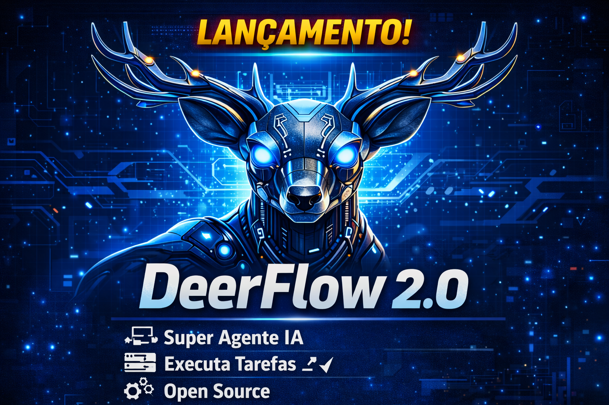

Curso completo sobre o super agent harness open-source da ByteDance. Do primeiro "olá mundo" até estender o harness com skills, sub-agents, MCP servers e providers customizados.
Dois tracks + um módulo comparativo. Teoria curta, lab em todo módulo, foco em usar e estender — não só ler.
O que é, como instalar, como usar no dia a dia — sem tocar código.
LangGraph interno, middleware, skills, sub-agents e MCP servers.
Providers, sandbox, memória avançada, embed e contribuição upstream.
DeerFlow vs. Claude Code vs. Antigravity — quando usar o quê.
Devs curiosos, PMs técnicos e pesquisadores que querem usar o DeerFlow no dia a dia. Não exige Python avançado. Ao final, você configura, opera e extrai valor real sem tocar em código.
Engenheiros de IA, platform engineers e contribuidores upstream. Pré-requisito: Track 1 + Python 3.12 + noção de LangGraph/LangChain. Ao final, você estende o harness, embute em outro sistema e abre PRs.
